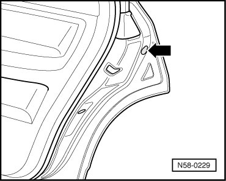
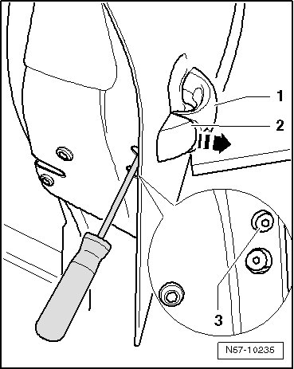
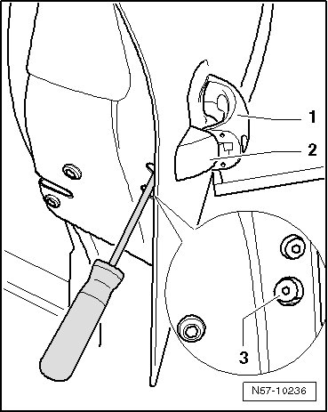

Lock Cylinder Housing
Rear Door
Lock Cylinder Housing
Removing
- Pry cap out of the opening - arrow -.

- Pull the door handle - 1 - and hold it in this position. Remove the bolt - 3 - all the way. This loosens the lock cylinder housing - 2 -.

- Pull lock cylinder housing - 2 - out of door handle mounting bracket at right angle to door in - direction of arrow -.
Installation
- Insert lock cylinder housing - 2 - at right angle into door handle mounting bracket.

- Install the bolts - 3 - into the bracket.
Door handle engages again into lock cylinder housing with a very audible click.
• During installation, lock cylinder housing must be pressed onto the outer door panel. The door handle - 1 - rests lightly against the outer door panel.
Then, continue in reverse order of removal.
• Always perform a function test. The door cannot be opened if it is not adjusted correctly or the release is not clipped in correctly.